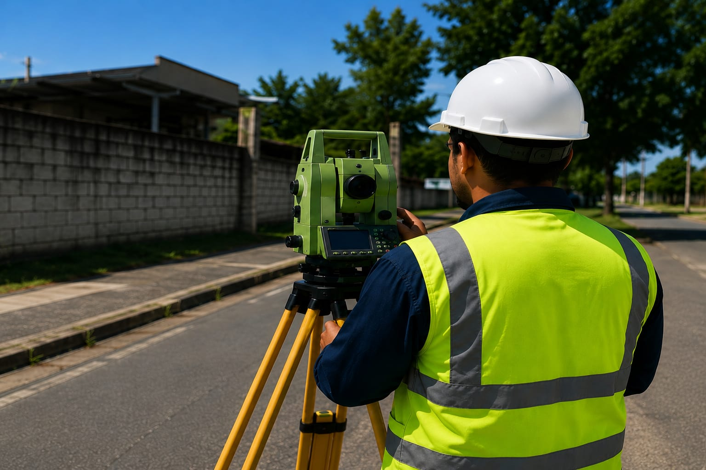
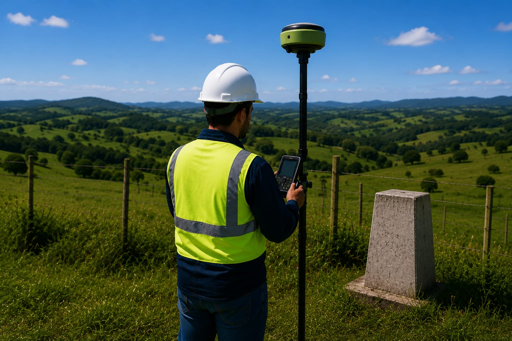
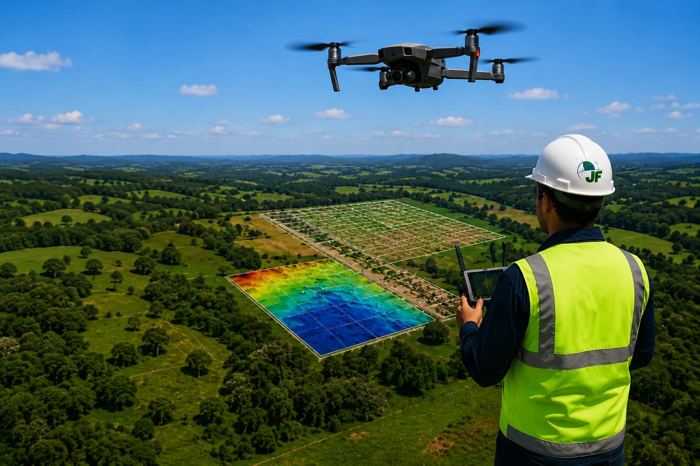
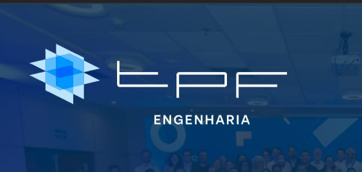
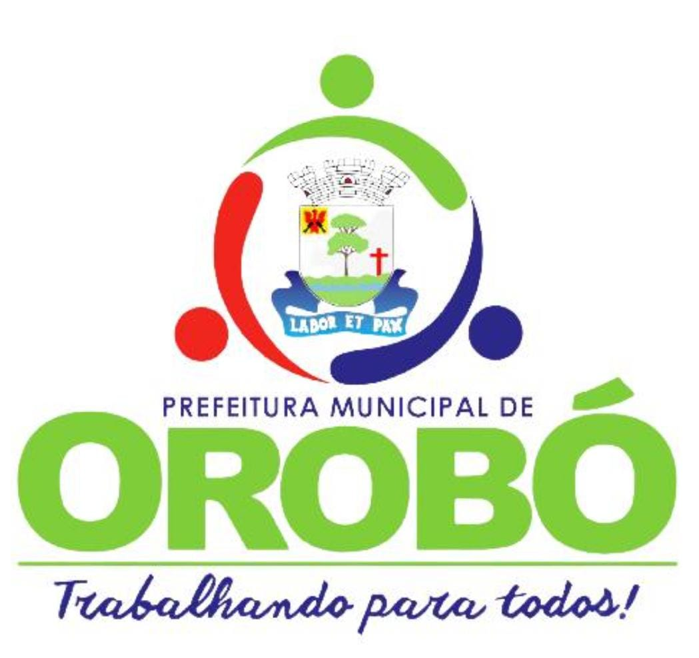
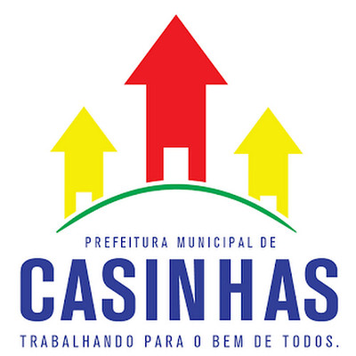
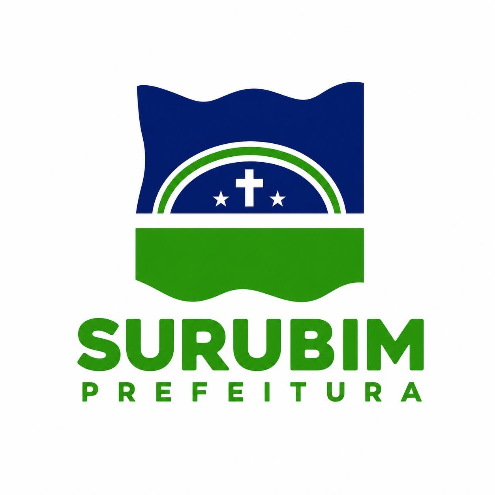

Precisão que constrói confianças.
Resultados que geram segurança.
Soluções completas em topografia para obras, terrenos e empreendimentos.
Tecnologia de ponta e equipe especializada para entregar resultados com precisão.

Precisão
em cada detalhe

Segurança
em cada etapa

Qualidade
que gera resultados

Equipe
especializada
Serviços
A JF, presta os mais diversos serviços nas áreas de Topografia e Construções usando sempre equipamentos e softwares de última geração e pessoal capacitado.
Levantamento
Planialtimétrico cadastral
Levantamento
Planialtimétrico Georreferenciado
Aerolevantamento
Com Drone(vant)

Quem Somos
A JF Topografia foi construída sobre os ensinamentos e valores transmitidos por meu pai, José Francisco Gonçalves Irmão. O que começou com serviços de regularização rural tornou-se uma empresa comprometida com a inovação, a precisão técnica e a confiança de nossos clientes. Seguimos investindo em tecnologia e conhecimento para oferecer soluções cada vez mais eficientes e contribuir para o desenvolvimento.
Entre em Contato
Principais Clientes
A JF Topografia e Consultoria Técnica LTDA, fundada em 2011, tem participado de importantes projetos de infraestrutura, saneamento, mineração, urbanização, desenvolvimento imobiliário e consultoria técnica, atendendo empresas de destaque nacional e regional.




Faça sua cotação online
Estamos prontos para atender todas as suas necessidades.